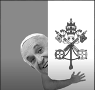

Newest news, Bla bla bla bla This has nothing to do with anything relevant to the web. bla bla bla I just need something to fill the web.
Newest news, Bla bla bla bla This has nothing to do with anything relevant to the web. bla bla bla I just need something to fill the web.
Family pizzeria seeking brave—uh, motivated—security personnel to work the night shift. Hours: Midnight to 6 AM. Responsibilities include monitoring cameras, ensuring the safety of our equipment, and keeping an eye on our furry animatronic friends.
(Warning: They might move around, but don't worry about it.)
We are NOT responsible for injuries, dismemberment, or any general loss of limbs. Wage: Minimum. Job satisfaction: Questionable. Apply now: www.smartnonsense.com"Violence is a legitible form of expression! As an American, I got the right to express my opinions under the First Commandment!" shouted Cletus Fitzgerald McWilliams, a local man from the backwoods of Southtown, as he drove his 2016 GMC Terrain straight through the White House gates.
The man, who was reportedly enraged by what he called the "liberal president's decision" to overturn his appeal for drive-through liquor and gun stores, left a trail of destruction in his wake, taking out multiple Secret Service agents who valiantly tried to stop him. McWilliams, who was previously charged with indecent exposure at a Chuck E. Cheese, is now facing 30 years to life in prison. Witnesses report he demanded to speak directly to the president, saying, "I need my Jack Daniels and my AR-15 in one go, and I won't take no for an answer!" Authorities say McWilliams is currently being held at Southtown Police Department Jail, where his claims of innocence remain highly questionable.
As Detective Smith remarked, it was "the worst crime scene I've ever seen in my 30-year career."
In response, he’s now scheduled for psychological evaluation with Dr. Lamb.
A new online dating website, just launched last month, is under scrutiny for its faulty background checks after a murder occurred between two users: Nicholas Hopkins and the now-deceased Anthony Corrado Jr. The suspected perpetrator, Nicholas Hopkins, had intriguingly described himself as "a vulnerable guy who needs to be held by big, strong arms," which police believe might have been a ploy to attract wealthy, older men for eventual robbery and murder. Authorities are currently on a city-wide manhunt for Nicholas, with several witnesses claiming to have spotted him at the "Honkers" Strip Club.
"I know I never had a real job, but I still understand the economy better than you do. Probably because of my deep, meticilous voice," said Salieri DiLorenzo in a recent interview.
In a bold new direction, America is embracing inclusion like never before. Under President Salieri, this means not only a significant tax overhaul but also a dramatic redesign of the American flag. DiLorenzo has unveiled a new flag design set to replace the current one on November 17th.
“It’s psychologically proven to resolve conflicts. The old flag was too aggressive—too many enemy combatants were offended by it,” Salieri explained. “This new flag symbolizes peace and encourages citizens to engage in the ongoing debates about gender identity and undocumented immigrant rights.”
